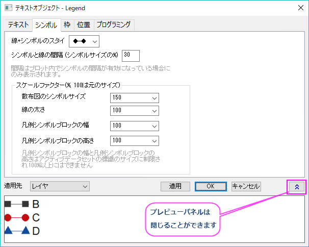
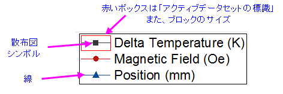

(テキストオブジェクトプロパティ)シンボルタブ
テキストオブジェクトプロパティ - シンボルタブ
- 
グラフ凡例はテキストオブジェクトの一つです。テキストオブジェクトがグラフ凡例の場合、テキストオブジェクトダイアログにシンボルタブが追加されます。
線+シンボルのスタイル
線+シンボルグラフで、凡例内の線とシンボルの形式を決定するためにこの設定を使用します。
シンボルと線の間隔 (シンボルサイズの%)
線+シンボルグラフに適用します。凡例の項目の線とシンボルの間隔を追加します。これを使用する場合、作図の詳細ダイアログのグラフの線タブのシンボルとの隙間が有効である必要があります。
スケールファクター(%, 100は元のサイズ)
これらのコンボボックスでは、ドロップダウンリストから数字を選択するか、ボックスに数値を入力します。最大シンボルブロックの幅と高さを表示するには、アクティブデータセットの標識を有効にします（ページレベルの作図の詳細で設定または、凡例を右クリックして凡例: アクティブデータセットの標識を選択）。
- 
| 散布図シンボルサイズ
|
- このボックスは100より大きい数をとれます。
- シンボルサイズは、凡例テキストサイズで制限されています（テキストタブ）。フォントサイズを大きくすると、より大きなシンボルサイズを使用できます。
- 線+シンボルグラフおよび散布図で適用できます。
|
| 線の太さ
|
- このボックスは100より大きい数をとれます。
- 線+シンボルグラフおよび折れ線グラフで適用できます。
|
| 凡例シンボルの幅
|
- このボックスは100より大きい数をとれます。この数字が100の場合、実際の幅は作図の詳細ダイアログの凡例/タイトル タブの設定に従います。
- このコントロールは、アクティブなデータセットインジケータの幅を調整するために使用され、内部ブロックの幅は、凡例のアクティブなデータセットインジケータのサイズに制限されます。
- 凡例のテキストサイズ（テキストタブ）を増やすと、アクティブなデータセットインジケータの高さ/幅が増加します。
- 棒グラフや面積グラフプロットなどのブロックスタイルの凡例シンボルや、線 + シンボル、折れ線プロットを使用するグラフタイプにも適用されます。
|
| パターンブロックの幅
|
- このボックスは100より大きい数にはなりません。
- アクティブデータセットインジケータが設定されたら、このコントロールを使用して内部ブロック幅を調整できます。100未満の場合、インジケータ内でブロックの前後に隙間ができます。
- 棒グラフや面積グラフプロットなどのブロックスタイルの凡例シンボルや、線 + シンボル、折れ線プロットを使用するグラフタイプにも適用されます。
|
| パターンブロックの高さ
|
- このボックスは100より大きい数にはなりません。
- このコントロールを使用して、内部ブロックの高さを調整できます。100未満では、インジケータ内にパターンブロックの上下に隙間ができます。
- 棒グラフや面積グラフプロットなどのブロックスタイルの凡例シンボルや、線 + シンボル、折れ線プロットを使用するグラフタイプにも適用されます。
|
| フォントサイズ
|
- このボックスは100より大きい数にはなりません。
- このコントロールを使用してフォントサイズの倍率を調整できます。 テキスト タブでセットされているフォントサイズが18の時、フォントサイズの倍率は50となり、フォントサイズは9となりますが、実際のフォントサイズは18 のままとなります。(テキスト タブか、ツールチップボックスでは)
|
適用先
凡例オブジェクトダイアログボックスで行った編集を他の凡例オブジェクトにも適用します。テキストまたはプログラミングタブで行うような一部の編集は他の凡例オブジェクトに適用されません。
| レイヤ
|
現在のレイヤにのみ適用します。レイヤは1つの凡例オブジェクトしか持てません。
|
| ウィンドウ
|
ウィンドウ(ページ)の全てに適用します。
|
| フォルダ
|
プロジェクトエクスプローラの現フォルダ内全てに適用します。
|
| プロジェクト
|
現プロジェクト内の全てに適用します。
|